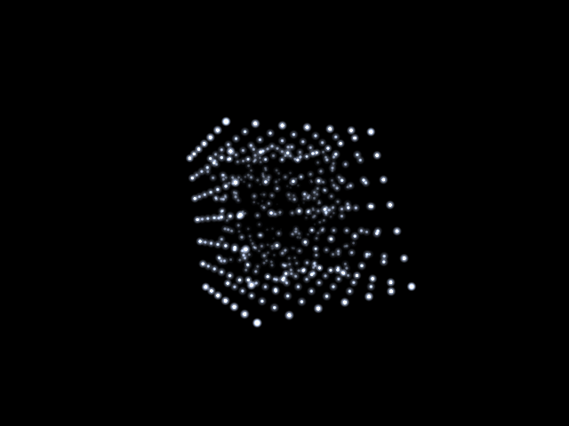

FORM
an audiovisual sculpture

An experimental audiovisual sculpture. Pure maths: a body of points, a drone and tuned strikes, all generated in real time and shaped by the controls.
A nod to the demoscene and to 90s and 00s drone and IDM. It rests silent until touched, and each launch varies slightly. Headphones recommended.
Built for handhelds with two analogue sticks that click for L3 and R3, plus L1, R1, L2 and R2.
Handheld (PortMaster)
form.zip144 KB · In testing for PortMaster. Source
Install on a handheld
- You need a Linux handheld with PortMaster installed.
- Copy
form.zip, still zipped, into theautoinstallfolder inside PortMaster on your SD card, then open PortMaster once.
Controls
| Right stick | turn (it keeps turning when you let go) |
| Left stick | twist |
| D-pad | strike from that side; hold to bend it away |
| A and B | expand and compress |
| X | twist sharply |
| Y | colour |
| L1 | hold still |
| R1 | resonate |
| L2 and R2 | pull and push |
| L3 and R3 | high tick and low knock |
| A and B, Y and R1, L2 and R2 | their own chords and shapes |
| Start | let go of everything |
| Select and Start | exit |
Notes
A small native program using the system SDL2 library. No runtime and no bundled files; every sound is generated as it plays. Made for 640 by 480 screens; it letterboxes on others.
FORM is freeware. You are welcome to share unmodified copies.